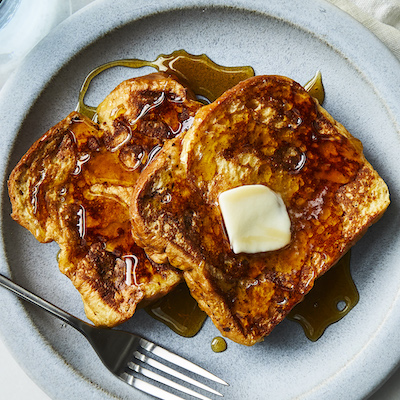

French Toast

Description
French toast is a quick and easy recipe anyone can make in order to satisfy their sweet tooth.
You can use different types of bread, you can add fruit as a topping, and you can even add
creal as a coating to have a cruch.
Ingredients
- 2/3 cup milk
- 2 large eggs
- 1 teaspoon vanilla extract (optional)
- 1/4 teaspoon ground cinnamon (optional)
- salt to taste
- 6 thick slices bread
- 1 tablespoon unsalted butter
Steps
- Whisk milk, eggs, vanilla, cinnamon, and salt together in a shallow bowl.
- Lightly butter a griddle and heat over medium-high heat.
- Dunk bread in the egg mixture, soaking both sides. Transfer to the hot skillet and cook until golden, 3 to 4 minutes per side. Serve hot.
Home Page